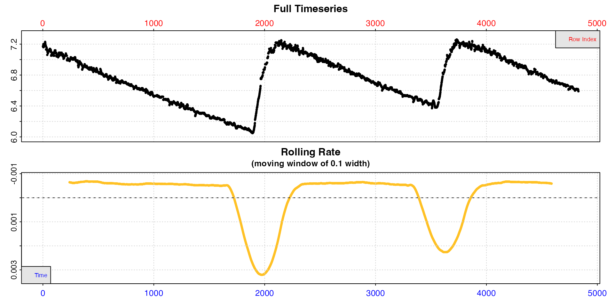
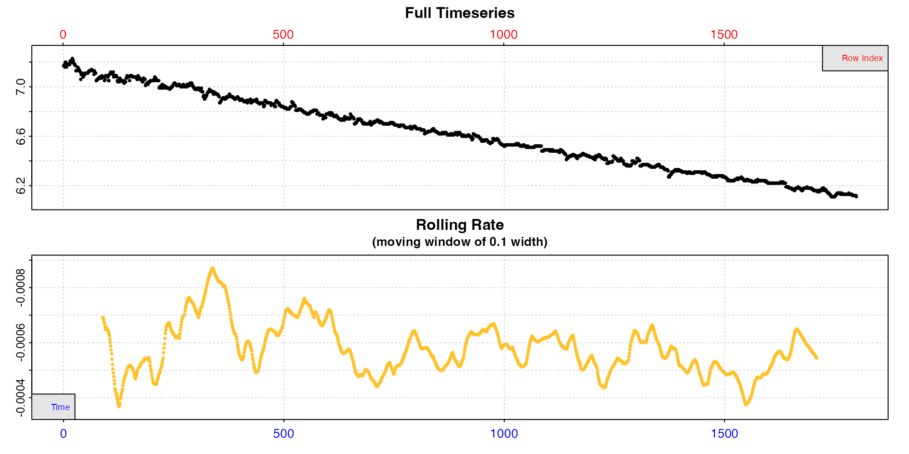
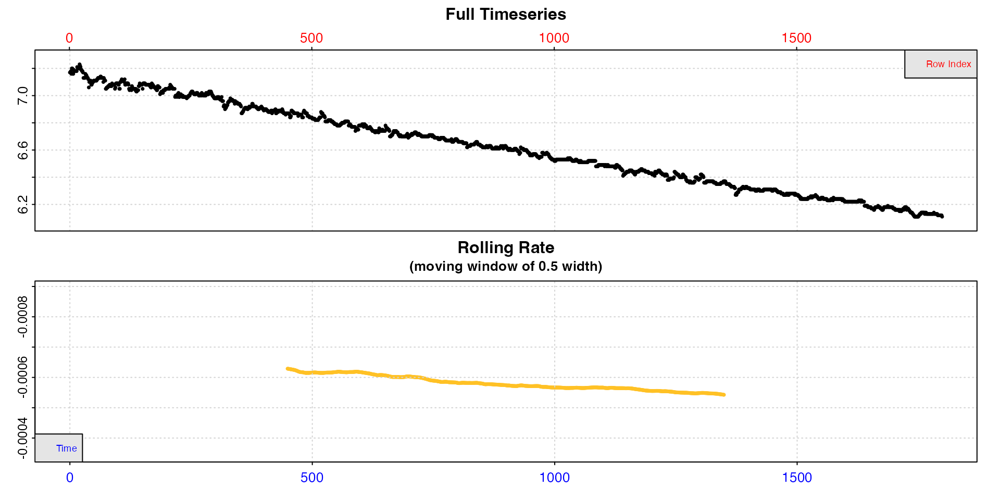
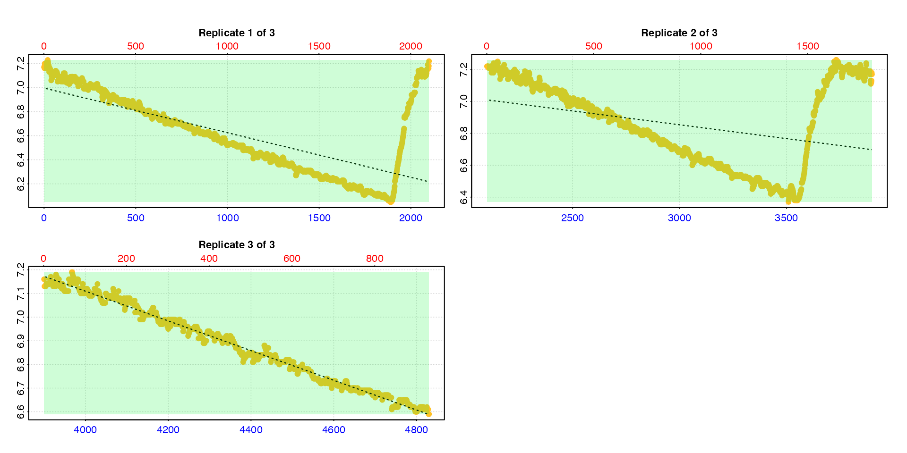
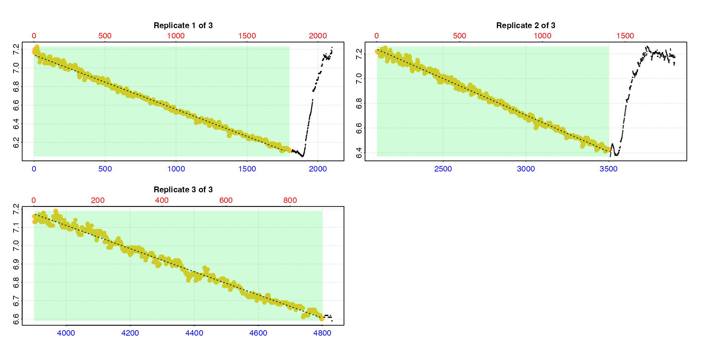
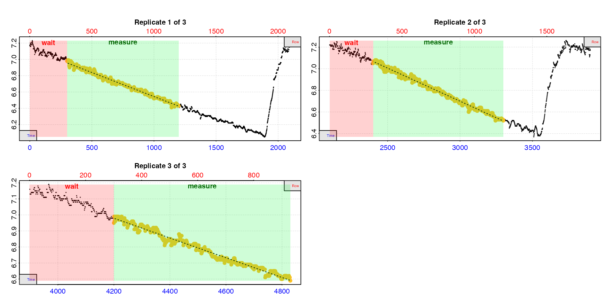
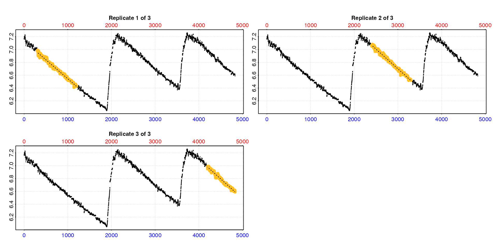
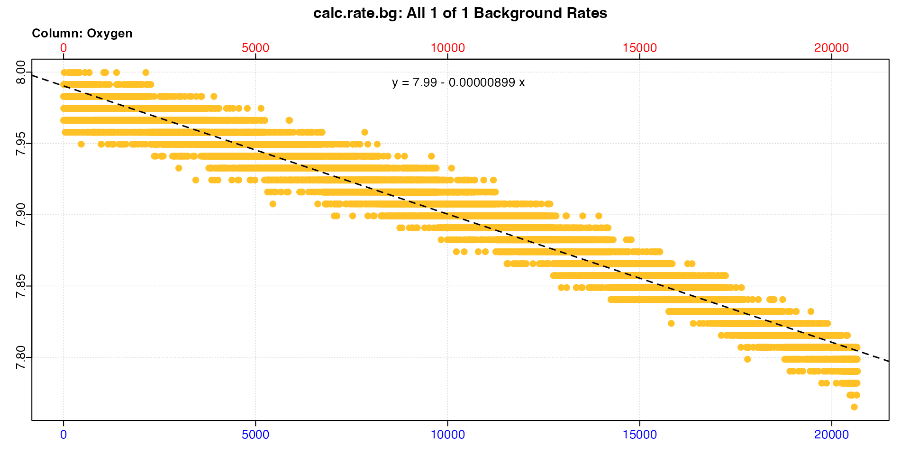
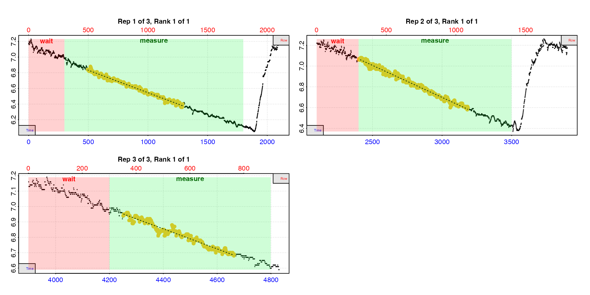

vignettes/intermittent_short.Rmd
intermittent_short.RmdIntermittent-flow respirometry allows multiple replicates to be conducted in an experiment by periodically flushing the respirometer with new water or air, for example after a specific period of time or oxygen decrease. Typically, probes are left recording during flushes, with the resulting trace showing the oxygen returning to ambient levels. If the data is not split into the separate replicates this results in a dataset with oscillating levels of oxygen, and generally we want to extract a rate from each descending section. This can prove tricky especially when experiments are lengthy and have many replicates.
respR v2.1
introduced new functions to analyse intermittent-flow data:
calc_rate.int() which runs
calc_rate() on every replicate in an intermittent-flow
dataset to extract a rate from the same time or row region of
each
auto_rate.int() which runs
auto_rate() on every replicate in an intermittent-flow
dataset to automatically extract the most linear,
lowest, or highest rate in each
select_rate() which works on
convert_rate() objects and allows for advanced selection of
a final rate using consistent criteria, including the results of
intermittent-flow analyses
This vignette shows how to use both calc_rate.int and
auto_rate.int to analyse a fairly short intermittent-flow
respirometry experiment. In vignette("intermittent_long")
we show how they can be used along with select_rate to
analyse a much longer intermittent-flow experiment with a regular
structure and increasing background rate. However, we advise reading
this one first as it better covers the basics.
The example data, intermittent.rd, contains
intermittent-flow measurements of oxygen consumption in the sea urchin
Heliocidaris erythrogramma. More information about the data can
be viewed via ?intermittent.rd.
In this experiment the flushes were triggered manually so replicates
are not regularly spaced and are of different durations, with the third
in particular quite a bit briefer than the others. Therefore, for the
following examples we need to tell the function the locations of the
start of each replicate. In vignette("intermittent_long")
you can see an example of analysis of a regular intermittent-flow
experiment where we only need to specify the interval between them.
The first step in any data analysis task should be to visualise and
inspect the data. For this we use the inspect() function.
This step is optional, however it scans the data for common issues,
plots it, and saves it to an object to pass to further stages of the
analysis. Passing all of these checks is not strictly necessary
depending on the data. See vignette("inspecting").
urchin_int <- inspect(intermittent.rd)#> inspect: Applying column default of 'time = 1'
#> inspect: Applying column default of 'oxygen = 2'
#> inspect: No issues detected while inspecting data frame.
#>
#> # print.inspect # -----------------------
#> Time O2
#> numeric pass pass
#> Inf/-Inf pass pass
#> NA/NaN pass pass
#> sequential pass -
#> duplicated pass -
#> evenly-spaced pass -
#>
#> -----------------------------------------
We can see from the top plot that this dataset has three replicates,
separated by two flushes where new water was added. The bottom plot
shows rate of change (positive or negative) in oxygen over a rolling
window of 10% of the data, and flush periods obviously skew this plot.
Note how rates are plotted on a numerically reversed y-axis so that
uptake rates are higher than production rates, or oxygen input rate in
the case of the flushes (this can be changed by passing
rate.rev = FALSE).
This lower plot provides a quick visual inspection of how the rate
varies over the course of the experiment. Regions of stable and
consistent rates can be identified on the rolling rate plots as flat or
level areas. The plot here in inspect is for exploratory
purposes only; later functions allow rate to be calculated over specific
regions. Here, despite the flushes skewing the rate plot, specimen
uptake rates (flat regions) appear to be relatively consistent within
each experimental replicate with a value of around -0.005.
For a closer look, we can use subset_data() and
inspect() without saving the result to check regions of the
data, which can help us decide how we are going to proceed.
intermittent.rd |>
subset_data(from = 1, to = 1800, by = "row") |>
inspect()
Inspecting the first replicate shows us rate is indeed fairly consistent within the replicate, but fluctuates from around -0.0004 to -0.0008. However, bear in mind these rate values are determined over the default of a 10% window of the inspected data, and so are sensitive to noise.
inspect however lets us pass a different
width input for the purposes of the rolling rate plot.
Let’s try a wider window of 50% of the data.
intermittent.rd |>
subset_data(from = 1, to = 1800, by = "row") |>
inspect(width = 0.5)
Now we can see rate is much more consistent, although it decreases slightly over the course of the replicate. But we can tell that we would expect our extracted rates to be around -0.0006. Note the values in the rolling rate plot are plotted against the middle of the range over which they were calculated, which is why they are centred like this.
calc_rate.int
Introduced in respR v2.1,
calc_rate.int() is a dedicated function for
intermittent-flow respirometry data, in which you specify a replicate
structure and extract a rate from the same data region of each
replicate. This can be the same rows of each replicate or the same time
window.
calc_rate.int uses the starts locations to
subset each replicate from the data in x. The function
assumes each replicate ends at the row preceding the start of the next.
It then extracts a rate using the wait and
measure inputs. The by input
("row" or "time") determines how these other
inputs are applied to the data.
Here we will run through a calc_rate.int analysis of the
intermittent.rd data. Reading
vignette("calc_rate.int") first will be helpful in
explaining the general functionality, not all of which will be covered
here.
As with calc_rate and most functions in
respR, calc_rate.int will accept a data frame
of time against oxygen as well as inspect objects, however
we will use the urchin_int object we created above for the
remainder of this vignette.
The row locations of the replicates in this dataset can be found in
the help file (help("intermittent.rd")). Here is what
happens if we only specify the starting location of each using
starts:
calc_rate.int(urchin_int,
starts = c(1, 2101, 3901)) 
#>
#> # summary.calc_rate.int # ---------------
#> Summary of all replicate results:
#>
#> rep rank intercept_b0 slope_b1 rsq row endrow time endtime oxy endoxy rate.2pt rate
#> 1: 1 1 6.996 -0.0003710 0.480 1 2100 0 2099 7.17 7.22 0.00002382 -0.0003710
#> 2: 2 1 7.374 -0.0001736 0.118 2101 3900 2100 3899 7.22 7.17 -0.00002779 -0.0001736
#> 3: 3 1 9.621 -0.0006280 0.989 3901 4831 3900 4830 7.16 6.59 -0.00061290 -0.0006280
#> -----------------------------------------This is obviously not what we want as the flush periods for the first
two replicates are included. Therefore, we need to specify a
measure phase to exclude the flushes. With irregular
replicates like this we can even specify a different
measure phase in each, and in this case use all data except
the flush.
calc_rate.int(urchin_int,
starts = c(1, 2101, 3901),
measure = c(1800, 1400, 900)) |>
summary()
#>
#> # summary.calc_rate.int # ---------------
#> Summary of all replicate results:
#>
#> rep rank intercept_b0 slope_b1 rsq row endrow time endtime oxy endoxy rate.2pt rate
#> 1: 1 1 7.138 -0.0005821 0.995 1 1800 0 1799 7.17 6.11 -0.0005892 -0.0005821
#> 2: 2 1 8.482 -0.0005927 0.995 2101 3500 2100 3499 7.22 6.43 -0.0005647 -0.0005927
#> 3: 3 1 9.635 -0.0006313 0.988 3901 4800 3900 4799 7.16 6.60 -0.0006229 -0.0006313
#> -----------------------------------------However, we usually don’t want to use the entire replicate. Typically
we use a wait phase directly after a flush in case the
animal was disturbed or the oxygen probe has some lag in detecting the
rapid change in oxygen concentration. We can also use the
measure input to standardise the region from which we
extract a rate.
For example, wait = 10, measure = 20, by = "time" will
exclude the first 10 units of time used in the original data, and
calculate a rate from the following 20 time units.
Similarly, wait = 120, measure = 360, by = "row" will
exclude the first 120 rows of each replicate, and calculate a rate
across the following 360 rows.
For this experiment, let’s say we want to exclude the first 5 minutes
(300 rows) of each replicate to allow for the specimen to settle down
after the flush, then calculate rates over a 15 minute period (900
rows). In these data where oxygen is recorded every second this will be
wait = 300, measure = 900. The default by
method is by = "row" so we do not need to specify this.
urch_rates <- calc_rate.int(urchin_int,
starts = c(1, 2101, 3901),
wait = 300,
measure = 900,
legend = TRUE) 
In this plot, the data used to calculate the rate is the yellow
points, the red shaded region is the wait phase, and the
green shaded region the measure phase (we added
legend = TRUE so we can see labels for this example).
In these data of oxygen recorded once per second the time and row values are equivalent, so in the first replicate we can see the rate has been determined from timepoints 300 to 900 timepoints later (i.e. 1200). In the other replicates it is from the same equivalent time or row window. Note the third replicate is not long enough to have a timepoint of 1200. The default is to use the closest value which in this case is the final row of the dataset, and is acceptable here because there is no flush to worry about.
We can view the full results using summary:
summary(urch_rates)
#>
#> # summary.calc_rate.int # ---------------
#> Summary of all replicate results:
#>
#> rep rank intercept_b0 slope_b1 rsq row endrow time endtime oxy endoxy rate.2pt rate
#> 1: 1 1 7.134 -0.0005894 0.990 301 1200 300 1199 6.98 6.43 -0.0006118 -0.0005894
#> 2: 2 1 8.536 -0.0006122 0.991 2401 3300 2400 3299 7.05 6.52 -0.0005895 -0.0006122
#> 3: 3 1 9.564 -0.0006155 0.980 4201 4831 4200 4830 6.95 6.59 -0.0005714 -0.0006155
#> -----------------------------------------The replicate number is indicated by the $rep column.
The $rank column indicates ranking or ordering of rates
within each individual replicate. Since
calc_rate.int only returns one rate per replicate it is not
relevant here, but is useful for auto_rate.int() results
where multiple rates per replicate may be returned.
The output object can also be plotted, and if we change the
type input we can see each rate in context of the whole
dataset. For larger datasets this may be of limited utility.
plot(urch_rates,
type = "full")
See vignette("calc_rate.int") for additional plotting
options.
calc_rate.int objects can also be passed to
adjust_rate for background adjustments.
There is no specific background data associated with the
intermittent.rd dataset, but we will use the
background_con.rd data as an example. We just need to
convert it to the same units as our urchin data.
bg_data <- background_con.rd
bg_data[[2]] <- convert_DO(bg_data[[2]],
from = "%Air",
to = "mg/l",
S = 30, t = 15)Now we calculate a background rate.
bg_rate <- calc_rate.bg(bg_data)
print(bg_rate)
#>
#> # print.calc_rate.bg # ------------------
#> Background rate(s):
#> [1] -0.000008988
#> Mean background rate:
#> [1] -0.000008988
#> -----------------------------------------And use it to adjust our urchin rates.
urch_rates_adj <- adjust_rate(urch_rates,
by = bg_rate) |>
summary()
#> adjust_rate: Rate adjustments applied using "mean" method.
#>
#> # summary.adjust_rate # -----------------
#>
#> Adjustment was applied using 'mean' method.
#> Summary of all rate results:
#>
#> rep rank intercept_b0 slope_b1 rsq row endrow time endtime oxy endoxy rate.2pt rate adjustment rate.adjusted
#> 1: 1 1 7.134 -0.0005894 0.990 301 1200 300 1199 6.98 6.43 -0.0006118 -0.0005894 -0.000008988 -0.0005804
#> 2: 2 1 8.536 -0.0006122 0.991 2401 3300 2400 3299 7.05 6.52 -0.0005895 -0.0006122 -0.000008988 -0.0006032
#> 3: 3 1 9.564 -0.0006155 0.980 4201 4831 4200 4830 6.95 6.59 -0.0005714 -0.0006155 -0.000008988 -0.0006066
#> -----------------------------------------Note how the rep column is carried forward to the
results. We can see a small adjustment to the rates in the final column.
Here we are adjusting by a single value, but other adjustment methods in
adjust_rate can be used with calc_rate.int
objects. See vignette("adjust_rate") for examples, and
vignette("intermittent_long") for how a dynamic background
rate can be applied to intermittent-flow data.
Lastly, we convert the rates to units.
urch_rates_conv <- convert_rate(urch_rates_adj,
oxy.unit = "mg/l",
time.unit = "s",
output.unit = "mg/h/g",
mass = 0.006955,
volume = 2.379) |>
summary()
#> convert_rate: Object of class 'adjust_rate' detected. Converting all adjusted rates in '$rate.adjusted'.
#>
#> # summary.convert_rate # ----------------
#> Summary of all converted rates:
#>
#> rep rank intercept_b0 slope_b1 rsq density row endrow time endtime oxy endoxy rate adjustment rate.adjusted rate.input oxy.unit time.unit volume mass area S t P rate.abs rate.m.spec rate.a.spec output.unit rate.output
#> 1: 1 1 7.134 -0.0005894 0.990 NA 301 1200 300 1199 6.98 6.43 -0.0005894 -0.000008988 -0.0005804 -0.0005804 mg/L sec 2.379 0.006955 NA NA NA NA -4.971 -0.7147 NA mgO2/hr/g -0.7147
#> 2: 2 1 8.536 -0.0006122 0.991 NA 2401 3300 2400 3299 7.05 6.52 -0.0006122 -0.000008988 -0.0006032 -0.0006032 mg/L sec 2.379 0.006955 NA NA NA NA -5.166 -0.7428 NA mgO2/hr/g -0.7428
#> 3: 3 1 9.564 -0.0006155 0.980 NA 4201 4831 4200 4830 6.95 6.59 -0.0006155 -0.000008988 -0.0006066 -0.0006066 mg/L sec 2.379 0.006955 NA NA NA NA -5.195 -0.7469 NA mgO2/hr/g -0.7469
#> -----------------------------------------Again note how the rep column is carried forward.
A final rate can be determined in a number of ways and will be specific to each experiment. As an example we can use the mean of all three replicates.
mean(urch_rates_conv)
#>
#> # mean.convert_rate # -------------------
#> Mean of all rate results:
#>
#> Mean of 3 output rates:
#> [1] -0.7348
#> [1] "mgO2/hr/g"
#> -----------------------------------------See also vignette("select_rate") for more advanced rate
selection.
auto_rate.int
Also introduced in respR v2.1,
auto_rate.int() is a dedicated function for
intermittent-flow respirometry data which allows you to run the
auto_rate() function on every replicate. You can use it to
extract from each replicate the most linear (i.e. most consistently
sustained) rates, the lowest or highest rates of a specific duration, or
any of the other methods supported by auto_rate. This
vignette - vignette("auto_rate.int") - covers the basic
functionality.
Here we’ll repeat the above analysis, but this time use
auto_rate.int to extract the most linear (i.e. most
consistently maintained) rate from each replicate, which could be
considered a routine metabolic rate (RMR).
auto_rate.int has a few additional inputs to consider
related to the use of auto_rate(). See
help("auto_rate") and vignette("auto_rate")
for full details, but briefly these are to specify the
method and width. The by input
which controls the units of starts, wait and
measure also applies to the width input.
Lastly, n controls how many results to return from each
replicate, the default being 1.
A notable difference from calc_rate.int is that while
you also specify a measure phase the
auto_rate.int analysis occurs within this region,
and the width of the rates (i.e. duration or rows over which they occur)
may be of various lengths depending on the method and
width inputs.
Here, we again want to exclude the first 5 minutes (300 rows) of each
replicate to allow for the specimen to settle down after the flush. We
then calculate rates from within a different measure period
in each replicate to use as much of the data as possible. We specify the
"linear" method, and use a width of
400, which was arrived at after some testing of different
values. See here
for discussion of appropriate widths to use with
auto_rate.
urch_rates <- auto_rate.int(urchin_int,
starts = c(1, 2101, 3901),
wait = 300,
measure = c(1500, 1100, 600),
method = "linear",
width = 400,
legend = TRUE) |>
summary()
#>
#> # summary.auto_rate.int # ---------------
#> Summary of all rate results:
#>
#> rep rank intercept_b0 slope_b1 rsq density row endrow time endtime oxy endoxy rate
#> 1: 1 1 7.119 -0.0005736 0.988 13621 495 1291 494 1290 6.84 6.40 -0.0005736
#> 2: 2 1 8.549 -0.0006169 0.988 15364 2402 3186 2401 3185 7.06 6.60 -0.0006169
#> 3: 3 1 9.715 -0.0006501 0.956 24620 4251 4663 4250 4662 6.93 6.68 -0.0006501
#> -----------------------------------------That’s it. This is our RMR for each replicate.
In this example, just to show a different adjustment method, let’s say we had a concurrent control experiment running. We’ll pretend the same background data we used above is from this concurrent control. Assuming that the data have the same starting timepoint, this adjustment method calculates a background rate from the exact same region in the background data that each rate was calculated from.
urch_rates_adj <- adjust_rate(urch_rates,
by = bg_rate,
method = "concurrent") |>
summary()
#> Warning: adjust_rate: 'x' and 'by' inputs differ in length by more than 5%.
#> method = "concurrent" is intended for background experiments that have been run in parallel and so should be approximately the same length, and share the same 'time' data.
#> Adjustments have been attempted anyway, using shared or closest time values in the 'x' and 'by' inputs.
#> adjust_rate: Rate adjustments applied using "concurrent" method.
#>
#> # summary.adjust_rate # -----------------
#>
#> Adjustment was applied using 'concurrent' method.
#> Summary of all rate results:
#>
#> rep rank intercept_b0 slope_b1 rsq density row endrow time endtime oxy endoxy rate adjustment rate.adjusted
#> 1: 1 1 7.119 -0.0005736 0.988 13621 495 1291 494 1290 6.84 6.40 -0.0005736 -0.000008391 -0.0005652
#> 2: 2 1 8.549 -0.0006169 0.988 15364 2402 3186 2401 3185 7.06 6.60 -0.0006169 -0.000003028 -0.0006139
#> 3: 3 1 9.715 -0.0006501 0.956 24620 4251 4663 4250 4662 6.93 6.68 -0.0006501 -0.000001678 -0.0006484
#> -----------------------------------------We can see there has been a very small, but different, adjustment made to each rate. See here for a better example of this adjustment method in the context of intermittent-flow analyses.
Last step is to convert.
urch_rates_conv <- convert_rate(urch_rates_adj,
oxy.unit = "mg/l",
time.unit = "s",
output.unit = "mg/h/g",
mass = 0.006955,
volume = 2.379) |>
summary()
#> convert_rate: Object of class 'adjust_rate' detected. Converting all adjusted rates in '$rate.adjusted'.
#>
#> # summary.convert_rate # ----------------
#> Summary of all converted rates:
#>
#> rep rank intercept_b0 slope_b1 rsq density row endrow time endtime oxy endoxy rate adjustment rate.adjusted rate.input oxy.unit time.unit volume mass area S t P rate.abs rate.m.spec rate.a.spec output.unit rate.output
#> 1: 1 1 7.119 -0.0005736 0.988 13621 495 1291 494 1290 6.84 6.40 -0.0005736 -0.000008391 -0.0005652 -0.0005652 mg/L sec 2.379 0.006955 NA NA NA NA -4.841 -0.6960 NA mgO2/hr/g -0.6960
#> 2: 2 1 8.549 -0.0006169 0.988 15364 2402 3186 2401 3185 7.06 6.60 -0.0006169 -0.000003028 -0.0006139 -0.0006139 mg/L sec 2.379 0.006955 NA NA NA NA -5.258 -0.7560 NA mgO2/hr/g -0.7560
#> 3: 3 1 9.715 -0.0006501 0.956 24620 4251 4663 4250 4662 6.93 6.68 -0.0006501 -0.000001678 -0.0006484 -0.0006484 mg/L sec 2.379 0.006955 NA NA NA NA -5.553 -0.7984 NA mgO2/hr/g -0.7984
#> -----------------------------------------This method could also be easily adapted to extract the lowest or highest rates of a specific duration from each replicate.
Previous versions of this vignette demonstrated use of different
methods, such as looping and subsetting of data, to extract individual
replicates for processing through calc_rate or
auto_rate. These approaches still work and are archived here
in case they are of use in some cases. However for most analyses use of
calc_rate.int or auto_rate.int is the
recommended approach.